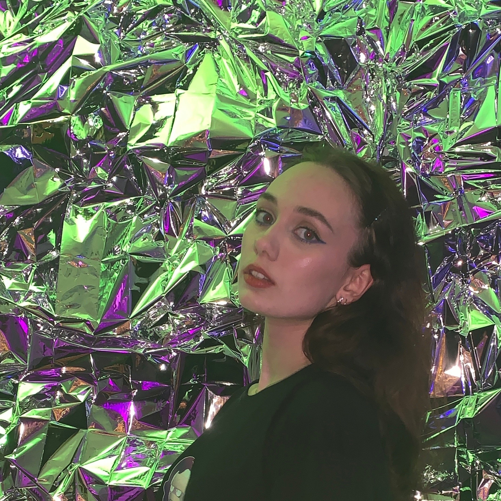

|
Привет! Меня зовут Анна, и я - молодой и амбициозный дизайнер, стремящаяся к созданию уникальных и запоминающихся образов для различных брендов. Мне 21 год, и я предана миру дизайна уже более пяти лет. |
 |
Моя специализация - разработка фирменного стиля. Я убеждена, что хороший фирменный стиль - это не просто логотип и цветовая палитра. Это целостная концепция, которая отражает идеи, ценности и уникальность бренда. Моя цель - помочь компаниям выделиться на рынке и создать неповторимый имидж, который будет привлекать клиентов.
Индивидуальный подход
Креативные решения
Профессиональное исполнение